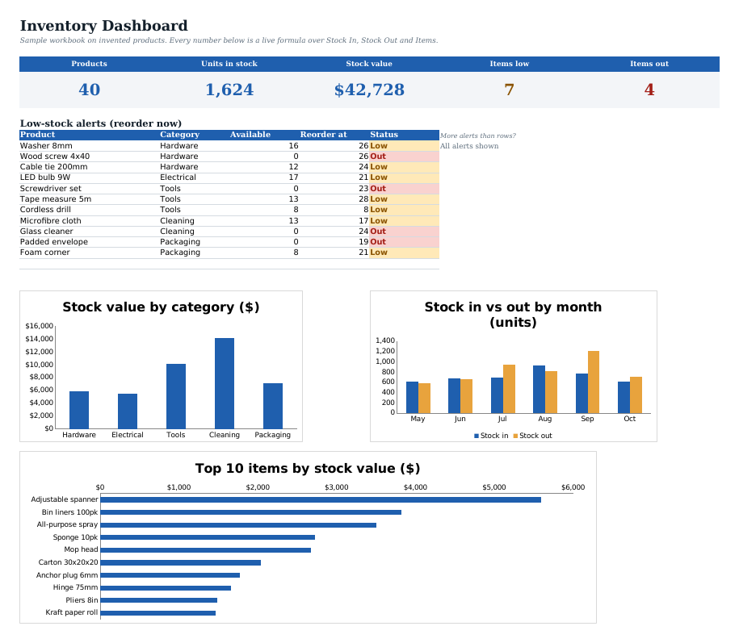
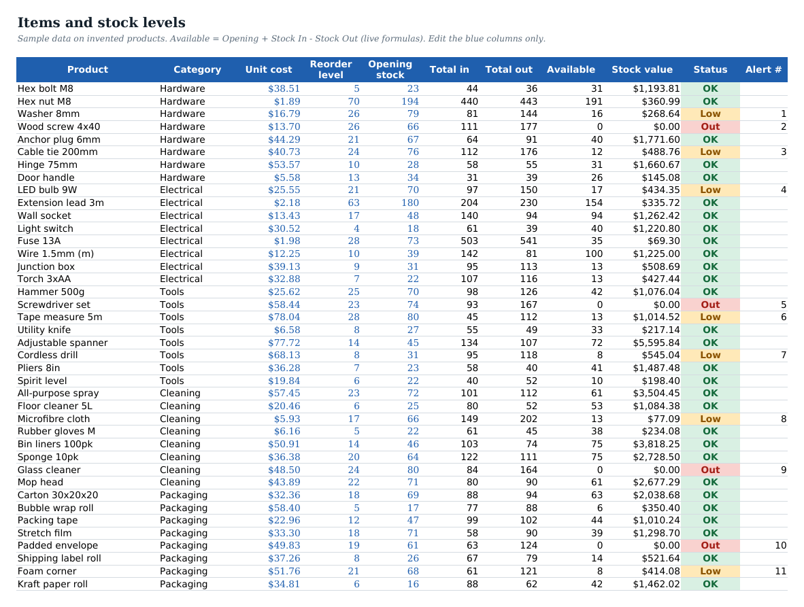

Excel inventory dashboard
Stock in and out, available quantities, low-stock alerts and charts, in one workbook.

- Tracks stock levels for every product, with a reorder level for each.
- Records incoming and outgoing stock on two simple sheets, with a dropdown for the product.
- Shows the available quantity and stock value for each item, calculated automatically.
- Flags low-stock and out-of-stock items, and turns the numbers into graphs and a report.

Sample workbook on invented products, built for this post.